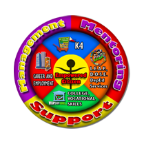

Our mission
Dynamic Teen Company (DTC) exists to promote literacy to the disadvantaged, provide them guidance until they progress in their career and be productive contributors of society.
Our vision
DTC envisions itself to be an established organization building up out-of-school and at risk of dropping out children and disadvantaged youth in the Philippines, to become morally upright, productive and responsible individuals who embrace a spirit of volunteerism.
Our core value
Let’s PUSH IT!Praise
Unite
Serve
Heal
Inspire
Teach
Programs
Two major programs has helped DTC reduced street children in Cavite City and is continuously being replicated in other parts of the country to aid every community’s efforts in decreasing the number of out-of-school and dropout children thus decreasing the number of children in the streets. The programs are called Kariton Klasrum (Pushcart Classroom) and Learner’s Educational Aid Program (L.E.A.P.). The third major program develops former street children to becoming productive citizens of the community through tertiary education and volunteerism, it is called Support for Tertiary Education Program (S.T.E.P.). The fourth program called Formal Admission to Career Employment (F.A.C.E.) completes the phases wherein empowered youth are being referred to companies and potential employers for them to become sustainable and able to provide for themselves and the needs of their family.
PHASE 1: Kariton Klasrum (K4)
PHASE 2: Learner’s Educational Aid Program (L.E.A.P)
PHASE 3: Support for Tertiary Education Program (S.T.E.P.)
PHASE 4: Formal Admission to Career Employment (F.A.C.E.)

Our Board of Trustees
President: Efren Peñaflorida Jr.
Chief Executive Officer: Randie Salonga
Corporate Secretary: Joylyn Papa
Communications Secretary: Alexandra Marie Oliva
Treasurer: Jefferson Bernal
Adviser: Harnin Manalaysay
Our Executive Committee
EXECUTIVE SECRETARY
Ma. Carmela Salonga
TREASURY UNIT HEAD
Melanie Monto
KARITON KLASRUM REPLICATION UNIT HEAD
Raffy Alcantara
MARKETING, COMMUNICATIONS AND PUBLIC RELATIONS UNIT HEAD
Lorie Joy Servento
MANPOWER MANAGEMENT AND DEVELOPMENT UNIT HEAD
Jollina Mabongga
EDUCATION UNIT HEAD
Glenis May Peñaflorida
OPERATIONS UNIT HEAD
Julius Reyes
CAREER DEVELOPMENT AND EMPLOYMENT UNIT HEAD
Gazelle Felizardo
KARITON NOVALICHES HEAD
Jake Fernandez
MANAGEMENT INFORMATION SYSTEMS UNIT HEAD
Klarence Baptista